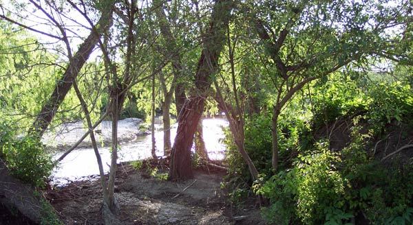

Welcome to my photography site. Photos showcased here will include only sights available within walking distance of my home.
On my frequent walks in the area I am often struck by the colors or patterns I see around me. I decided to take these photos as a way of letting the world see those colors and patterns through my camera-eye.